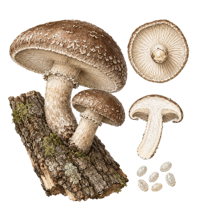
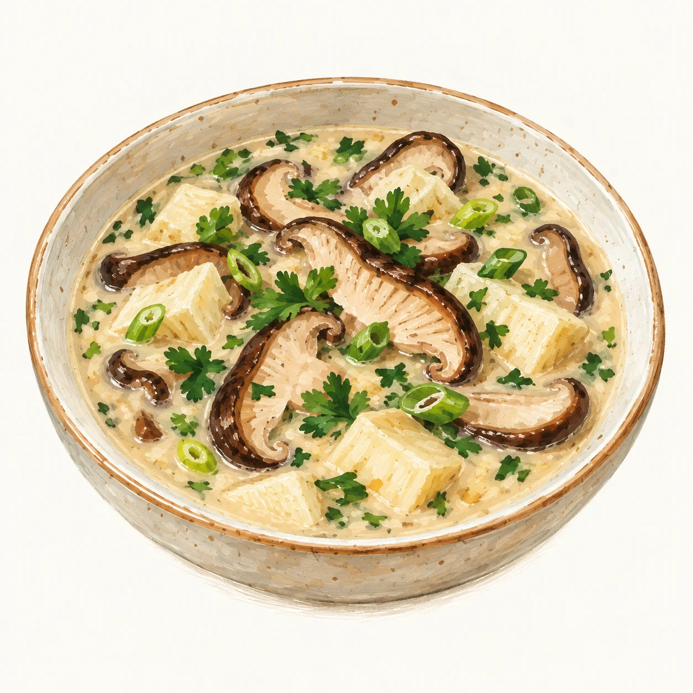
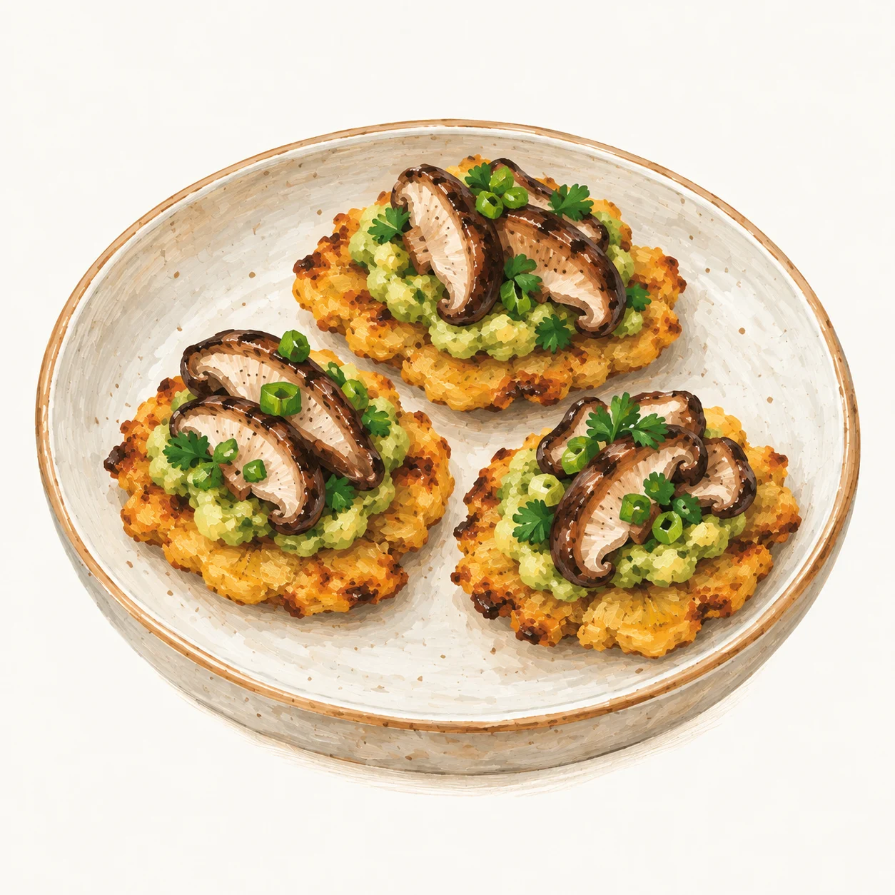

Profundo y sabroso.
Umami intenso con notas ligeramente ahumadas. Un perfil que invita a explorar sopas y platos cocinados.


La colección · Ficha 01
Lentinula edodes
Un sabor profundo.
Muchas maneras de llevarlo a la mesa.
Sabor, textura, ideas para cocinarla y los detalles que distinguen a esta seta.
[1] Perfil de la especie.
El shiitake requiere cocción completa: crudo o poco cocido puede causar dermatitis; un salteado rápido puede ser insuficiente. Preparación y cocción · Fuentes ↗.
Disponibilidad por confirmar. La consulta parte de la cantidad requerida.
01 — Consulta y entrega
Con la cantidad y el municipio de entrega se prepara un mensaje, para casa o restaurante, que consulta presentación, precio y disponibilidad.
Un proyecto de cultivo y conocimiento desde Tenjo, Cundinamarca.
Conocer Setas de la Peña ↗La disponibilidad y las presentaciones se confirman al consultar.
Primero acordamos presentación, cantidad, disponibilidad, costo de entrega y medio de pago. El pedido queda confirmado con la respuesta de Setas de la Peña. Preparar o compartir este mensaje no reserva producto.
Un lote permite relacionar el producto con los registros disponibles de su recorrido. La fecha de cosecha y las indicaciones de conservación también ayudan a conocerlo, cuando se proporcionan.
Refrigerar a 4 °C o menos, seguir la etiqueta y lavar bajo agua corriente justo antes de cocinar. El shiitake requiere cocción completa. Nuestra guía doméstica de conservación reúne recomendaciones para hongos frescos, cocinados y deshidratados. La vida útil específica de nuestros lotes está pendiente de validación.
02 — Perfil de referencia
Sabor y textura ayudan a imaginar una preparación. [1]
Umami intenso con notas ligeramente ahumadas. Un perfil que invita a explorar sopas y platos cocinados.
Sombreros suaves y esponjosos y tallos de textura más consistente. Al cocinarse, la textura puede variar de delicada a carnosa.
Perfil de la especie, no una cata de producto de Setas de la Peña.[1]
03 — En la cocina
Adaptaciones con ingredientes habituales en Colombia. Cada receta incluye cantidades y pasos.

Shiitake salteado, maíz y crema de aguacate con limón. Una propuesta para dos personas.
Ingredientes y preparación ↗
Un caldo con shiitake, leche de coco, jengibre, limón y cilantro.
Ingredientes y preparación ↗
Plátano verde con shiitake y aguacate. La cobertura se monta justo antes de compartir.
Ingredientes y preparación ↗Propuestas basadas en recetas publicadas, pendientes de prueba en nuestra cocina. Los tiempos y rendimientos son estimados.
Explorar las nueve recetas ↗Las seis propuestas de cocina colombiana ↗04 — De cerca
Una ilustración para observar la forma. Una fotografía de cosecha contará la historia de un producto concreto.
05 — Conservación
Orientación doméstica general para shiitake fresco.
Fuentes: FDA ↗ · Penn State ↗.
Guía completa: fresco, cocinado, congelado y seco ↗La etiqueta del producto complementa esta guía. La vida útil específica de nuestros lotes está pendiente de validación.
06 — Fuentes
Fuente del perfil de sabor, textura e ideas generales de uso. Consultada el 9 de octubre de 2026.
Cada adaptación y consejo enlaza a su fuente: Inquiring Chef, My Colombian Recipes, Feasting at Home, FDA, FoodSafety.gov, Penn State, Mushroom Council y NCHFP.
Archivo visual del proyecto: identidad de la especie, ilustración y sistema de diseño.
La descripción de una especie y la información de un lote tienen alcances distintos. Esta ficha no declara certificaciones, valores nutricionales medidos ni propiedades medicinales.
Seguir explorando